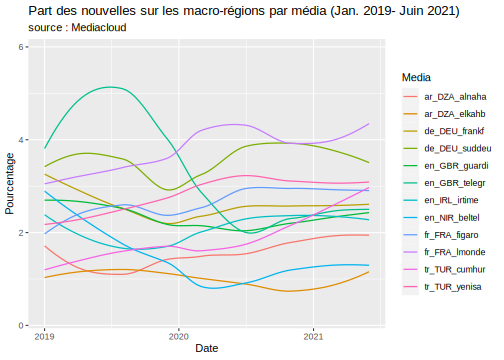

Chapter 7 Corpus
library(knitr)
library(dplyr)
library(quanteda)
library(data.table)
library(tidytext)
library(ggplot2)
library(readr)
library(stringr)7.1 Objectives
The aim of this section is to separate states and world region and to evaluate the relative frequencies of world regions by media an through time.
7.2 Prepare data
qd<-readRDS("quanteda/corpus_worldgeo_V3.RDS")
# Extract regs
qd$regs<-qd$tags
qd$regs<-gsub("ST_...","",qd$tags)
qd$regs<-gsub("CA_...","",qd$regs)
qd$nbregs<-ntoken(tokens(as.character(qd$regs)))
# Extract states
qd$sta<-qd$tags
qd$sta<-str_replace_all(qd$sta, "RE_[[:alpha:]_]+", "")
qd$sta<-str_replace_all(qd$sta, "CO_[[:alpha:]_]+", "")
qd$sta<-str_replace_all(qd$sta, "OR_[[:alpha:]_]+", "")
qd$sta<-str_replace_all(qd$sta, "LA_[[:alpha:]_]+", "")
qd$sta<-str_replace_all(qd$sta, "SE_[[:alpha:]_]+", "")
qd$sta<-str_replace_all(qd$sta, "ST_", "")
qd$sta<-str_replace_all(qd$sta, "CA_", "")
qd$nbsta<-ntoken(tokens(as.character(qd$sta)))
td<-tidy(qd)
hypercube <-function(qd = qd,
when = "date",
when_cut = "year",
who = "source",
where1 = "tags",
where2 = "tags")
{
# create data.table accroding to parameter chosen
don<-docvars(qd)
df<-data.table(id = docid(qd),
who = don[,who],
when = as.character(cut(don[,when],breaks=when_cut)),
where1 = don[,where1],
where2 = don[,where2])
# add code _no_ for empty fields
df$where1[df$where1==""]<-"_no_"
df$where2[df$where2==""]<-"_no_"
# unnest where1
df<-unnest_tokens(df,where1,where1,to_lower=F)
# unnest where2
df<-unnest_tokens(df,where2,where2,to_lower=F)
# define number of occurence by id
nb<-df[,.N,list(id)] %>% mutate(wgt = 1/N) %>% select(-N)
df<-df %>% left_join(nb)
rm(nb)
# Aggregate
hc<- df[,.( tags = .N, news=sum(wgt)) ,.(who, when,where1,where2)]
# Convert date to time
hc$when<-as.Date(hc$when)
# return hypercube
return(hc)
}
# Create Regional hypercube
hc_reg <- hypercube(qd = qd,
when = "date",
when_cut = "months",
who = "source",
where1 = "regs",
where2 = "regs")
saveRDS(hc_reg,"hypercube/hc_reg.RDS")
# Create State hypercube
hc_sta <- hypercube(qd = qd,
when = "date",
when_cut = "months",
who = "source",
where1 = "sta",
where2 = "sta")
saveRDS(hc_sta,"hypercube/hc_sta.RDS")
# Create State x Reg hypercube
hc_sta_reg <- hypercube(qd = qd,
when = "date",
when_cut = "months",
who = "source",
where1 = "sta",
where2 = "regs")
saveRDS(hc_sta_reg,"hypercube/hc_sta_reg.RDS")7.3 Distribution des nouvelles par média au cours du temps
hc<-readRDS("hypercube/hc_reg.RDS")
hc$OK<-as.factor(hc$where1!="_no_")
levels(hc$OK)<-c("Non","Oui")
month<-hc[,.(nb<-sum(news)),.(when,who,OK)] %>%
dcast(formula = who+when~OK, value.var = "V1",fill = 0) %>%
mutate(Media=who,
Date = when,
Total=Non+Oui,
Frequence = Oui,
Pourcentage = 100*Frequence/Total) %>%
select(Media,Date, Total,Frequence, Pourcentage) %>%
filter(is.na(Date)==F, Date < as.Date("2021-07-01"))
#kable(month,digits=c(0,0,0,2),caption = "Parts des nouvelles mentionnant une macro-région")
ggplot(month,aes(x=Date,y=Total,color=Media)) +
geom_line(lwd=0.5) +
ggtitle("Nombre de nouvelles par média (Jan. 2019- Juin 2021)",
subtitle = "source : Mediacloud)" )
7.4 Fréquences des macro-régions par journal
hc<-readRDS("hypercube/hc_reg.RDS")
hc$OK<-as.factor(hc$where1!="_no_")
levels(hc$OK)<-c("Non","Oui")
med<-hc[,.(nb<-sum(news)),.(who,OK)] %>%
dcast(formula = who~OK, value.var = "V1") %>%
mutate(Media = who,
Total=Non+Oui,
Frequence = Oui,
Pourcentage = 100*Frequence/Total) %>%
select(Media, Total,Frequence, Pourcentage)
tot<-med[1,]
tot$Media<-"Total"
tot$Total<-sum(med$Total)
tot$Frequence<-sum(med$Frequence)
tot$Pourcentage<-100*tot$Frequence/tot$Total
tabres<-rbind(med,tot)
kable(tabres,digits=c(0,0,0,2),caption = "Parts des nouvelles mentionnant une macro-région")| Media | Total | Frequence | Pourcentage |
|---|---|---|---|
| ar_DZA_alnaha | 32690 | 525 | 1.61 |
| ar_DZA_chorou | 18296 | 229 | 1.25 |
| de_DEU_frankf | 86802 | 2203 | 2.54 |
| de_DEU_suddeu | 34858 | 1186 | 3.40 |
| en_GBR_guardi | 75064 | 1711 | 2.28 |
| en_GBR_telegr | 37122 | 967 | 2.60 |
| en_IRL_irtime | 104956 | 2226 | 2.12 |
| en_NIR_beltel | 97861 | 1172 | 1.20 |
| fr_DZA_elwata | 9508 | 158 | 1.66 |
| fr_FRA_figaro | 124092 | 3406 | 2.74 |
| fr_FRA_lmonde | 47888 | 1791 | 3.74 |
| tr_TUR_cumhur | 128715 | 2593 | 2.01 |
| tr_TUR_yenisa | 92575 | 2630 | 2.84 |
| Total | 890427 | 20797 | 2.34 |
7.5 Fréquences des mentions de pays étrangers par journal
hc<-readRDS("hypercube/hc_sta.RDS")
hc$OK<-as.factor(hc$where1!="_no_" & substr(hc$who,4,6)!=hc$where1)
levels(hc$OK)<-c("Non","Oui")
med<-hc[,.(nb<-sum(news)),.(who,OK)] %>%
dcast(formula = who~OK, value.var = "V1") %>%
mutate(Media = who,
Total=Non+Oui,
Frequence = Oui,
Pourcentage = 100*Frequence/Total) %>%
select(Media, Total,Frequence, Pourcentage)
tot<-med[1,]
tot$Media<-"Total"
tot$Total<-sum(med$Total)
tot$Frequence<-sum(med$Frequence)
tot$Pourcentage<-100*tot$Frequence/tot$Total
tabres<-rbind(med,tot)
kable(tabres,digits=c(0,0,0,2),caption = "Parts des nouvelles mentionnant un pays étranger")| Media | Total | Frequence | Pourcentage |
|---|---|---|---|
| ar_DZA_alnaha | 35146 | 4042 | 11.50 |
| ar_DZA_chorou | 19685 | 1600 | 8.13 |
| de_DEU_frankf | 88018 | 10044 | 11.41 |
| de_DEU_suddeu | 35356 | 5462 | 15.45 |
| en_GBR_guardi | 77025 | 15681 | 20.36 |
| en_GBR_telegr | 37890 | 5897 | 15.56 |
| en_IRL_irtime | 106721 | 9261 | 8.68 |
| en_NIR_beltel | 99052 | 14808 | 14.95 |
| fr_DZA_elwata | 9655 | 558 | 5.78 |
| fr_FRA_figaro | 128221 | 26863 | 20.95 |
| fr_FRA_lmonde | 49520 | 11298 | 22.81 |
| tr_TUR_cumhur | 131412 | 13213 | 10.05 |
| tr_TUR_yenisa | 96113 | 15190 | 15.80 |
| Total | 913814 | 133916 | 14.65 |
7.6 Fréquences des mentions simaultanées d’états et de région par journal
hc<-readRDS("hypercube/hc_sta_reg.RDS")
hc$OK<-as.factor(hc$where1!="_no_" & hc$where2!="_no_" )
levels(hc$OK)<-c("Non","Oui")
med<-hc[,.(nb<-sum(news)),.(who,OK)] %>%
dcast(formula = who~OK, value.var = "V1") %>%
mutate(Media = who,
Total=Non+Oui,
Frequence = Oui,
Pourcentage = 100*Frequence/Total) %>%
select(Media, Total,Frequence, Pourcentage)
tot<-med[1,]
tot$Media<-"Total"
tot$Total<-sum(med$Total)
tot$Frequence<-sum(med$Frequence)
tot$Pourcentage<-100*tot$Frequence/tot$Total
tabres<-rbind(med,tot)
kable(tabres,digits=c(0,0,0,2),caption = "Parts des nouvelles mentionnant à la fois un pays (étranger ou non) et une macro-région")| Media | Total | Frequence | Pourcentage |
|---|---|---|---|
| ar_DZA_alnaha | 32684 | 110 | 0.34 |
| ar_DZA_chorou | 18293 | 56 | 0.31 |
| de_DEU_frankf | 86749 | 613 | 0.71 |
| de_DEU_suddeu | 34817 | 376 | 1.08 |
| en_GBR_guardi | 75043 | 443 | 0.59 |
| en_GBR_telegr | 37108 | 287 | 0.77 |
| en_IRL_irtime | 104924 | 562 | 0.54 |
| en_NIR_beltel | 97853 | 268 | 0.27 |
| fr_DZA_elwata | 9505 | 66 | 0.69 |
| fr_FRA_figaro | 124024 | 1240 | 1.00 |
| fr_FRA_lmonde | 47853 | 569 | 1.19 |
| tr_TUR_cumhur | 128678 | 747 | 0.58 |
| tr_TUR_yenisa | 92517 | 876 | 0.95 |
| Total | 890048 | 6213 | 0.70 |